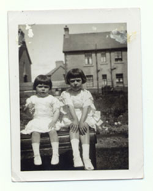

|
To my young self, she
was ageless, although she conjured her many-aged selves for
me in stories; I knew her as infant, teenager, war-time
adventurer,
wife, Mother, Grandmother. She is my fate – see those
hands in that old photograph? They are mine, incontrovertibly
mine – and my heroine all at once. I ran to her with
glee, with tears, with stories of my own. As a young woman,
her gypsy hair and fiery temper
marked her. With us she wavered: Presbyterian moralizing
and protective fear burst out in hot
moments, but she always softened to smothering kisses and secret
sweeties when parents weren’t looking. Large-bellied,
rose-cheeked, her chest was the prow of an ocean liner carving
determinedly through choppy seas, with powerful breasts like
pillows for small heads to doze against. “Sleeping pillows” we
called them, and drowsed on the rise and fall of breasts and
shoulders, with stories of who we are
and where we came from leaking into our ears through half sleep
on Grandmother’s
breath.
|